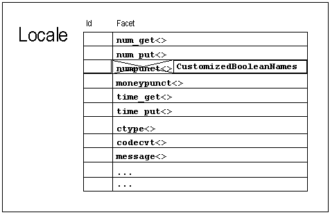

At times you may need to replace a facet object in a locale by another kind of facet object. In the following example, let us derive from one of the standard facet classes, numpunct, and create a locale object in which the standard std::numpunct facet object is replaced by an instance of our new, derived facet class.
Here is the problem we want to solve. When you print Boolean values, you can choose between the numeric representation of the values "true" and "false", or their alphanumeric representation.
int main(int argc, char** argv)
{
bool any_arguments = (argc > 1); //1
std::cout.setf(ios_base::boolalpha); //2
std::cout << any_arguments << '\n'; //3
// ...
}
| //1 | A variable of type bool is defined. Its initial value is the boolean value of the logical expression (argc > 1), so the variable any_arguments contains the information, whether the program was called with or without arguments. |
| //2 | The format flag std::ios_base::boolalpha is set in the predefined output stream cout. The effect is that the string representation of boolean values is printed, instead of their numerical representation 0 or 1, which is the default representation. |
| //3 | Here either the string "true" or the string "false" are printed. |
Of course, the string representation depends on the language. Hence, the alphanumeric representation of boolean values is provided by a locale. It is the std::numpunct facet of a locale that describes the cultural conventions for numerical formatting. It contains services that return the string representations of the boolean values true and false.
This is the interface of facet numpunct:
namespace std{
template <class charT>
class numpunct : public locale::facet {
public:
typedef charT char_type;
typedef basic_string<charT> string_type;
explicit numpunct(size_t refs = 0);
char_type decimal_point() const;
char_type thousands_sep() const;
string grouping() const;
string_type truename() const;
string_type falsename() const;
static locale::id id;
// ...
};
}
Now let us replace this facet. To make it more exciting, let's use not only a different language, but also different words for true and false, such as Yes! and No!. For just using another language, we would not need a new facet; we would simply use the right native locale, and it would contain the right facet.
template <class charT> //1
class change_bool_names
: public std::numpunct_byname<charT> //2
{
public:
typedef std::basic_string<charT> string_type;
explicit change_bool_names (const char* name, //3
const charT* t,
const charT* f, size_t refs=0)
: std::numpunct_byname<charT> (name,refs),
true_string(t), false_string(f) { }
protected:
virtual string_type do_truename() const { //4
return true_string;
}
virtual string_type do_falsename() const {
return false_string;
}
private:
string_type true_string, false_string;
};
| //1 | The new facet is a class template that takes the character type as a template parameter. |
| //2 | The new facet is derived from the std::numpunct_byname<charT> facet.
The byname facets read the respective locale information from the external representation of a C locale. The name provided to construct a byname facet is the name of a locale, as you would use it in a call to setlocale(). |
| //3 | A constructor is provided that takes a locale name and the new values we want to display for the alpha versions of true and false. The fourth parameter, refs, controls the facet's lifetime, as described in an earlier section. |
| //4 | The virtual member functions do_truename() and do_falsename() are reimplemented. They are called by the public member functions truename() and falsename(). See the Apache C++ Standard Library Reference Guide for further details. |
Now let's create a German locale in which the std::numpunct<char> facet has been replaced by an object of our new derived facet type, as shown in Figure 11:

The code looks like this:
void main(int argc, char** argv)
{
std::locale loc(std::locale("de_DE"), //1
new change_bool_names<char>("de_DE","Ja.","Nein.")); //2
std::cout.imbue(loc); //3
std::cout << "Argumente vorhanden? " //Any arguments?
<< std::boolalpha << (argc > 1) << std::endl; //4
}
| //1 | A locale object is constructed with an instance of the new facet class. The locale object has all facet objects from a German locale object, except that the new facet object change_bool_names substitutes for the std::numpunct facet object. |
| //2 | The new facet object takes all information from a German numpunct facet object, and replaces the default native names for true and false with the provided strings "Ja." ("Yes.") and "Nein." ("No."). |
| //3 | The standard output stream std::cout is imbued with the newly created locale. |
| //4 | The expression (argc > 1) yields a boolean value, which indicates whether the program was called with arguments. This boolean value's alphanumeric representation is printed to the standard output stream. The output might be:
Argument vorhanden? Ja. |